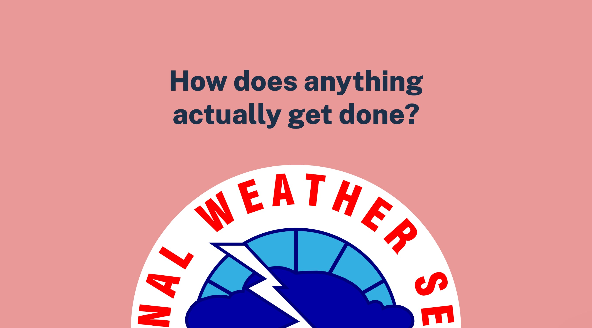
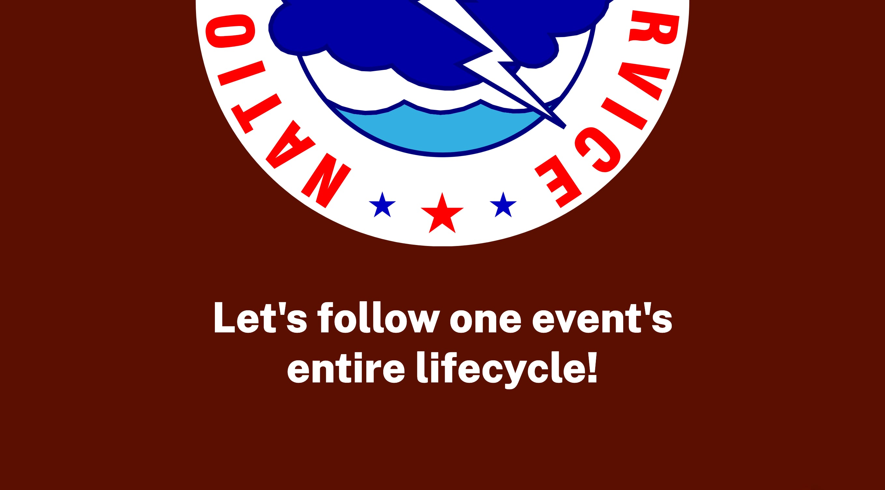
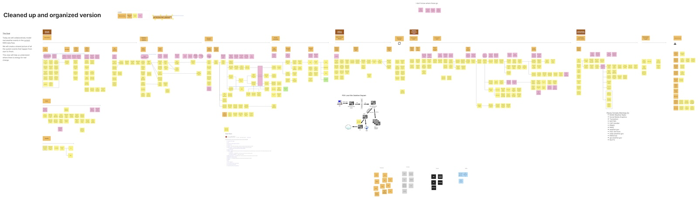

Collecting and distributing meteorological
data was originally a military duty. In 1942,
they created a central communications hub
where all data was sent and analyzed. In 1951,
the World Meteorological Organization – a UN
office – established the first global standards
for interconnecting the world’s weather offices.
The US’s central weather hub became the
Telecom Gateway, which is still in use today.
And then the information needs exploded
Naturally, right? Because computers became a thing.
And of course the money dried up
As with all federal agencies, funding tightened
up considerably. IT systems grew up without as
much documentation or change management.
As new needs appeared, people were hesitant to
use existing systems because they weren’t
sure how they worked. So that meant creating
more new systems.
Over and over and over.
Hence, a rubber band ball of IT systems
A lot of systems,
but not a lot of
comprehensive
understanding
of them all
How does anything
actually get done?
Let's follow one event's
entire lifecycle!


EVENT STORMING!
⚡️
Prompt: there's a
hazardous weather
outlook.
What has happened?
What happens next?
What'd we learn?
IT system knowledge ran very deep,
but not as broad
There were some surprising
system relationships
There are multiple ways of
getting whatever you want
Getting a weather warning on your
phone involves a dozen systems
What'd we learn?
IT system knowledge ran very deep,
but not as broad
There were some surprising
system relationships
There are multiple ways of
getting whatever you want
Getting a weather warning on your
phone involves a dozen systems
What'd we learn?
IT system knowledge ran very deep,
but not as broad
There were some surprising
system relationships
There are multiple ways of
getting whatever you want
Getting a weather warning on your
phone involves a dozen systems
What'd we learn?
IT system knowledge ran very deep,
but not as broad
There were some surprising
system relationships
There are multiple ways of
getting whatever you want
Getting a weather warning on your
phone involves a dozen systems
Maybe NWS's first
system map?

The goal was only to identify
as many touch points as we
could, so future teams could
do the work of detangling
everything.
Success!
If you’ve got a rubber band
ball system, consider
event storming!